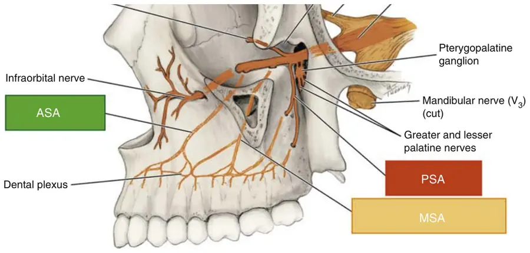

نسخه استخراجشده؛ ترجمه یا تأیید علمی انجام نشده است. وضعیت: captured
برای درمان ریشهی مولر اول و دوم بالا بلاک عصب آلوئولار فوقانی خلفی (PSA) زدهای. مولر دوم کاملاً بیحس است، ولی وقتی به بخش مزیال حفرهی دسترسی مولر اول میرسی بیمار دست بلند میکند. کدام عصب هنوز کار میکند؟

عصب PSA معمولاً تنها عصب پالپ مولر اول بالاست و یک بلاک PSA اغلب برای این دندان کافی است. مولر اول در ۷۷ تا ۱۰۰٪ بیماران با PSA بیحس میشود.
اما ریشهی مزیوباکال مولر اول همیشه از PSA عصب نمیگیرد. در حدود ۲۸٪ افراد عصب آلوئولار فوقانی میانی (MSA) این ریشه را عصب میدهد. برای همین بلاک PSA در حدود ۷۲٪ بیماران کل مولر اول را بیحس میکند و در بقیه ریشهی مزیوباکال حس دارد.
پس درد در بخش مزیال مولر اول پس از یک PSA موفق، به معنای خطای تکنیک نیست.
پیش از شروع کار، بیحسی پالپ مولر اول را با اسپری سرما یا EPT بسنج. اگر پاسخ داد:
بلاک PSA پالپ مولرها را بیتوجه به شکل ریشهها بیحس میکند. اینفیلتراسیون آرتیکائین ۴٪ (۰٫۶ تا ۰٫۹ میلیلیتر) هم از استخوان بهتر از داروهای دیگر نفوذ میکند.
اشتباه رایج: PSA فقط پالپ و بافت باکال را بیحس میکند. برای کشیدن مولر یا کار روی لثهی پالاتال، بیحسی کام را جدا بزن.